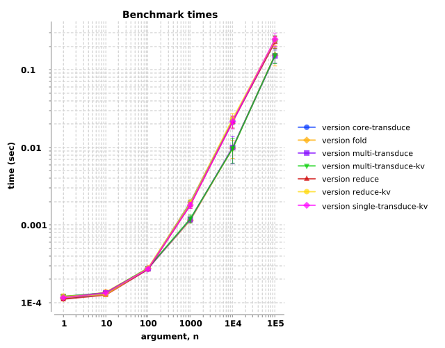

See also:
We'll define our benchmarks here. For each function below, we'll test vectors of random floating point numbers, increasing in length from one to one-hundred-thousand, by powers of ten. For each number, We'll construct a hashmap of eighteen mathematical operations on that number (trig ops, logarithms, etc.) that the JVM compiler oughtn't be able to optimize. We'll use the Criterium benchmarking library to measure the execution times of sixty repetitions of each condition. Benchmarks were run on three pinned cores of my geriatric desktop computer.
The functions under examination are as follows:
clojure.core/reduce
clojure.core/reduce-kv
clojure.core/transduce
brokvolli.single/transduce-kv
brokvolli.multi/transduce
brokvolli.multi/transduce-kv
Overall, we observe that the execution times increase with increasing vector lengths. The results are indistinguishable when the vector contains
one-hundred or fewer elements. When the vectors grow longer the three multi-threaded variants (fold, multi/transduce, and
multi/transduce-kv), offer improvements that scale roughly with the number of processors. The other functions all perform very similarly.
Not surprising, since they all ultimately delegate to the same underlying implementation, reduce/reduce-kv. Unfortunately, my computer was
not capable of handling one-million element vectors.
As with the previous benchmarks, the multi-threaded functions appear to offer performance benefits over their single-threaded counterparts for large collection sizes and heavy per-element operations. For smaller collections or shallow transformer stacks, the single-threaded variants perform better, and present a simpler interface.
This test performs multiple mathematical operations per element, sine, square-root, logarithm, etc.
Execution times increase with vector length. The single- and multi-threaded functions are indistinguishable for one-hundred elements or fewer. When the vectors grow larger than that, the multi-threaded variants demonstrate faster execution (i.e., lower times).

| arg, n | ||||||
|---|---|---|---|---|---|---|
| version | 1 | 10 | 100 | 1000 | 10000 | 100000 |
| core-transduce | 1.4e-04±5.8e-06 | 1.5e-04±7.5e-06 | 2.9e-04±1.4e-05 | 1.8e-03±1.3e-04 | 2.0e-02±2.1e-03 | 2.4e-01±4.0e-02 |
| fold | 1.3e-04±8.4e-06 | 1.4e-04±7.4e-06 | 2.9e-04±1.9e-05 | 1.2e-03±9.1e-05 | 8.0e-03±1.4e-03 | 1.2e-01±2.5e-02 |
| multi-transduce | 1.4e-04±1.2e-05 | 1.4e-04±8.2e-06 | 2.9e-04±1.7e-05 | 1.2e-03±1.1e-04 | 8.2e-03±1.5e-03 | 1.2e-01±2.6e-02 |
| multi-transduce-kv | 1.3e-04±6.3e-06 | 1.5e-04±7.1e-06 | 2.9e-04±1.8e-05 | 1.2e-03±6.9e-05 | 1.0e-02±1.9e-03 | 1.4e-01±3.5e-02 |
| reduce | 1.3e-04±9.9e-06 | 1.5e-04±1.5e-05 | 2.9e-04±1.9e-05 | 1.8e-03±1.9e-04 | 1.9e-02±2.6e-03 | 2.3e-01±3.8e-02 |
| reduce-kv | 1.3e-04±6.7e-06 | 1.5e-04±8.2e-06 | 3.1e-04±4.0e-05 | 1.8e-03±1.3e-04 | 1.9e-02±2.8e-03 | 2.3e-01±3.4e-02 |
| single-transduce-kv | 1.3e-04±8.4e-06 | 1.6e-04±1.8e-05 | 3.1e-04±1.5e-05 | 1.8e-03±1.5e-04 | 1.8e-02±3.1e-03 | 2.3e-01±3.6e-02 |